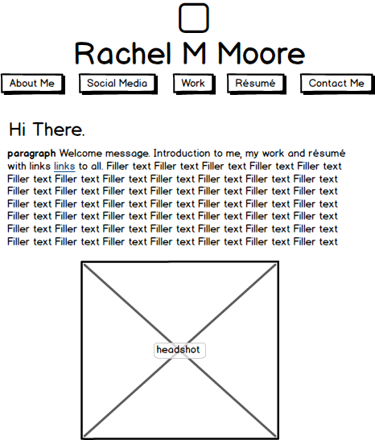

Rachel's Design Document
Purpose
This website will be my online portfolio. Its purpose is to serve as a one-stop shop for recruiters and prospective employers to get to know me and my work. I want the website to be easily navigable and incite a call to action from my target audience. It’s a chance for me to create a professional presence in the digital sphere.
Audience
The target audience for this website is recruiters and prospective employers. They vary in age but are probably between 30 and 40 years old. Gender is irrelevant, and location is dependent on where I’m applying and the reach of my online presence. Although I will be reaching out personally, I want a permanent representation of my work to be online, so I remain in reach of employers at all times. This target is looking for professional, accomplished, ambitious and creative students who have taken initiative during school to prepare for their careers.
Assessment
Three of my peers and one professor in the journalism school provided me with some brief feedback on the characteristics of an effective online portfolio. Ideally, I would like to talk to recruiters for companies I’m interested in working for, but that communication would be ultimately fulfilled by the portfolio itself.
Questions Asked
Q1: What are the necessary sections to include on an online portfolio?
Responses:
- A résumé section with a PDF on the page and link for download
- An About Me section that provides personal insight into who I am
- Split the writing and visual elements into two sections
- Create a social media page for multiplatform engagement
- Contact page with form field and contact information
Q2: What are some design elements that make portfolios visually attractive?
Responses:
- Clean background and color scheme
- Mix of serif and sans serif fonts
- Uniform brand standards
Q3: What are some things that aren’t good to include in a portfolios?
Responses:
- Quotes or recommendations from previous employers are outdated
- Don’t put everything I’ve ever done on my website, just choose the best work
Five Reference Websites:
- This website provides simple tabs and a functional home page, the way to organize an online portfolio
- This portfolio is copy heavy but still visually appealing, something I’d like to utilize on my site.
- My friend's website uses pictures to organize work, which is cool but not applicable to my personal portfolio.
- My roommate's website uses clean, contrasting colors to make text easy to read and keep the site from looking cluttered.
- This website is organized more like a blog, which takes away from the professional tone of online portfolios.
Content
Synopsis
I intend to sort content into five pages: About Me, Social Media, Work, Résumé and Contact Me. Each of these pages will include different content, a link back to the homepage and a footer with links to other pages.
Text Body
- Home page: This will be the landing page for my website. It will be simple with brief copy about myself and what this website is. Then it will urge viewers to check out the About Me or Work or Résumé pages because those are the most important.
- About Me: This page will be the most informal and fun. It’s a conversation between me and the reader, a chance to make a connection. This will include a photo of myself, personal anecdotes or fun facts, and links to the Social Media and Work pages.
- Social Media: This is the page that showcases my social media presence. It will include a live feed of my Instagram and Twitter with links to my Facebook, LinkedIn, Instagram and Twitter for recruiters to see outside of my website.
- Work: This is the most important page of my website. It will be organized into scrolling banners. The general topics I will cover are academic projects, internship with Monsanto, public relations writing portfolio (in PDF), and MOJO Ad campaigns.
- Résumé: This will be a simple page with a PDF of my résumé embedded into the site and a button for downloading the PDF separately.
- Contact Me: This is a page used for sparking the conversation between recruiters and me. It will include my primary email address, cell phone number, and form field that allows recruiters to email me directly through the site.
Wire-Frame

Organization/Rationale
Rationale:
The site will be most effective organized this way because it’s easy to navigate. My target audience doesn’t have much time during the day to be searching through a website looking for small bit of information. This way, whether a recruiter is looking for examples of my work or my email or my Twitter handle, he or she will be able to find it quickly, which will leave them with an impression of professionalism.
Media:
- Create a personal brand logo through Illustrator and this will be on every page.
- Upload a picture of myself for the About Me page.
- Include the logos of organizations I have worked for just to break up the text. These will all be JPG or PNG files but will include hyperlinks to the organization’s website for attribution purposes.
Color Scheme:
White
Black
Blue
Rational:
My portfolio’s color scheme will be mostly white, black and a pop of blue. I like the clean look of classic contrast but the blue keeps the color scheme young and fun, yet professional. The background will be white with black text, hyperlinks will be blue, along with tabs and headers.